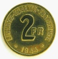
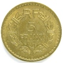
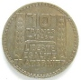

1944-1946Période
LibérationContexte
PhiladelphieAtelier US
RépubliqueRetour
À la Libération (1944), le Gouvernement provisoire de la République française rétablit les symboles républicains. Des monnaies sont frappées, notamment aux États-Unis (atelier de Philadelphie) pour accompagner le débarquement et la reconstruction monétaire.
Cette courte période (1944-1946) prépare le retour à un régime républicain stable avec la IVe République. Les monnaies de la Libération restent des pièces très symboliques pour les collectionneurs.
Sources : infonumis.info · catalogues Le Franc & Gadoury
La Libération
En 1944, une pièce de 2 francs est fabriquée aux États-Unis, à l'atelier de Philadelphie, pour être mise en circulation à l'arrivée des troupes américaines sur le territoire français.
'" loading="lazy" decoding="async" />
'" loading="lazy" decoding="async" />

Revers2 Francs FRANCE LIBRE
Date : 1944 ; Bronze-Aluminium ou Aluminium ? ; 27 mm ; 8.15g
50.000.000 exemplaires
Description de l'avers : xxx
Titulature de l'avers : xxx (xxx)
Description du revers : xxx
Titulature du revers : xxx (xxx)
Références : F.271 G.537
'" loading="lazy" decoding="async" />
'" loading="lazy" decoding="async" />

Revers5 Francs LAVRILLIER Bronze-Alu
Date : 1946 ; 21.800.000 ex. (pour un total de fabrication de 55.800.000 ex. de 1938 à 1940 et de 1945 à 1947)
Bronze-aluminium ; 31 mm ; 0g *********** (théorique 12g)
Circulation : jusqu'en 1950
Tranche lisse
Avers : REPVBLIQVE FRANÇAISE ; Tête laurée de la République aux cheveux longs à gauche ; au-dessous signé A. LAVRILLIER le long du listel.
Revers : RF / 5 / FRANCS en trois lignes dans le champ au-dessus du millésime encadré des différents, le tout dans une couronne de laurier ornée de sept bagues.
Références : F.337 G.761a
'" loading="lazy" decoding="async" />
'" loading="lazy" decoding="async" />

Revers10 Francs TURIN, GROSSE TETE
Date : 1946 ; Metal ; 26 mm ; 7g
Atelier : X (xxx) ; 00 000 exemplaires
Description de l'avers : xxx
Titulature de l'avers : xxx (xxx)
Description du revers : xxx
Titulature du revers : xxx (xxx)
Références : F.361 G.810